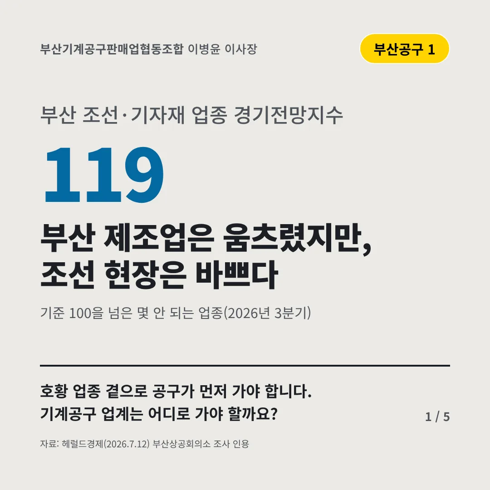
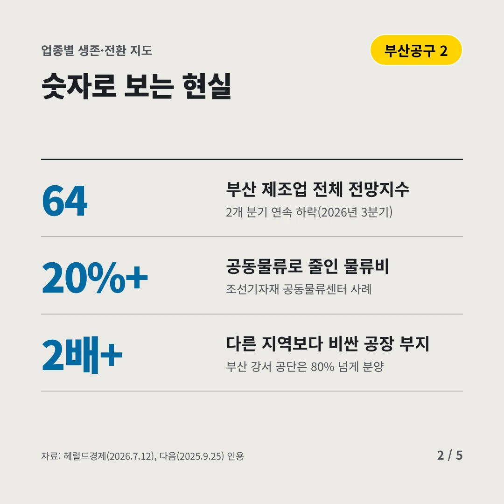
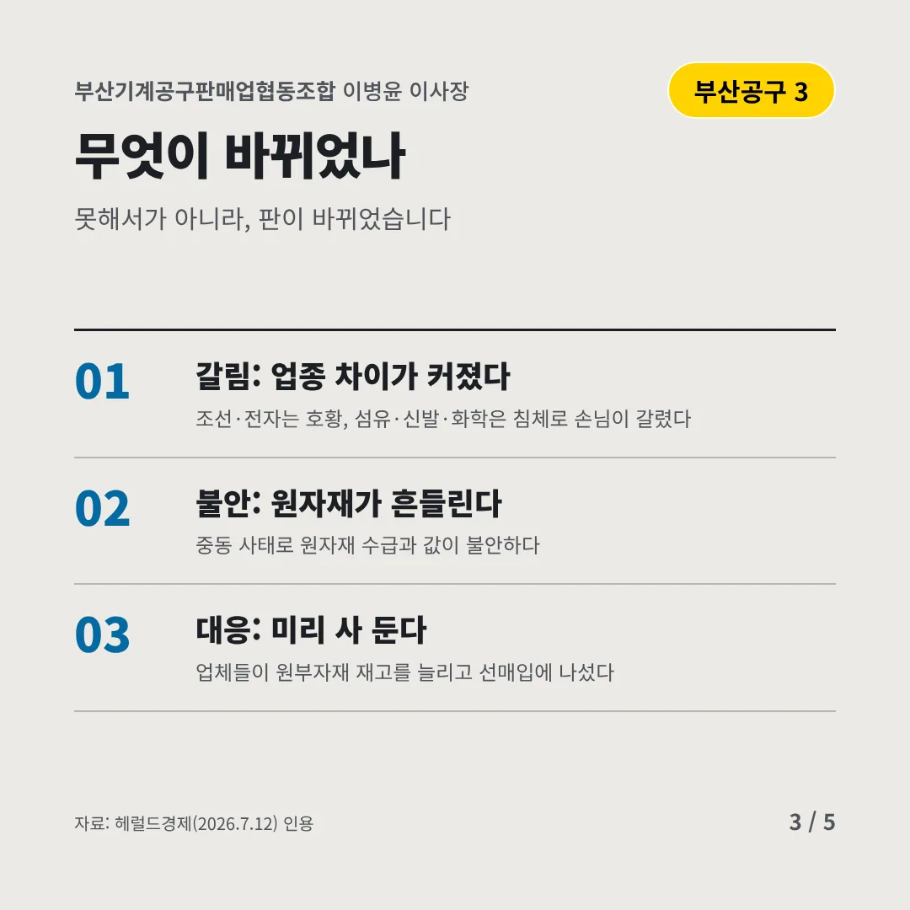
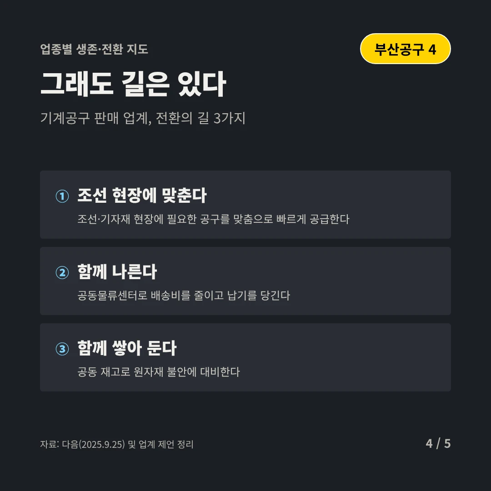
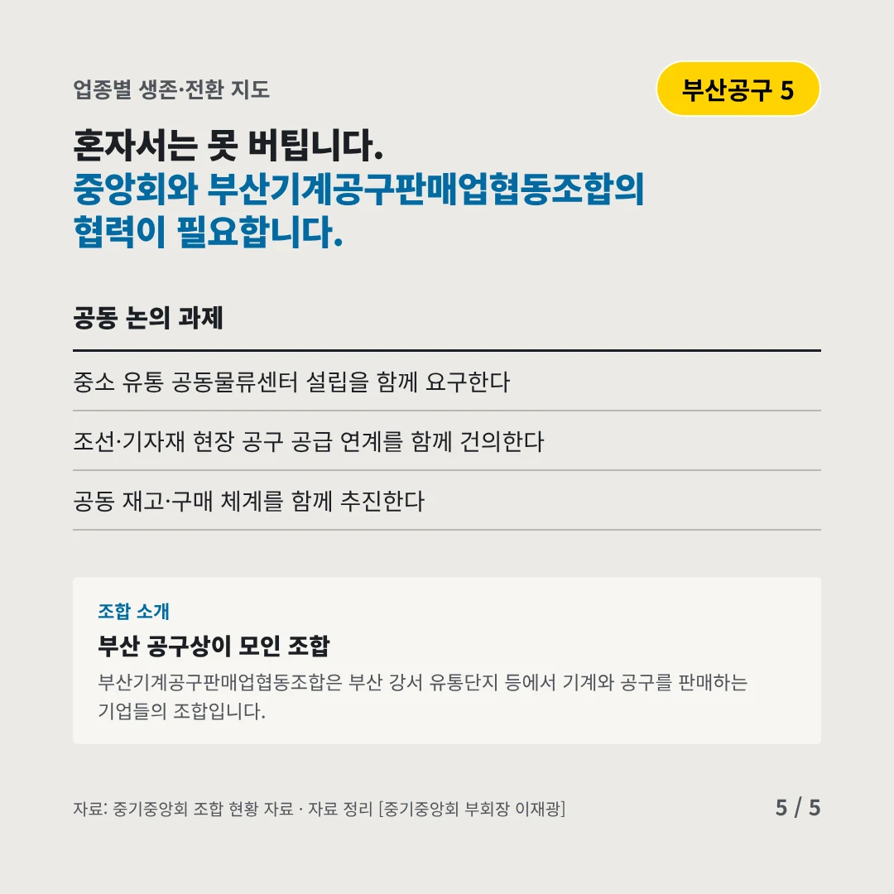
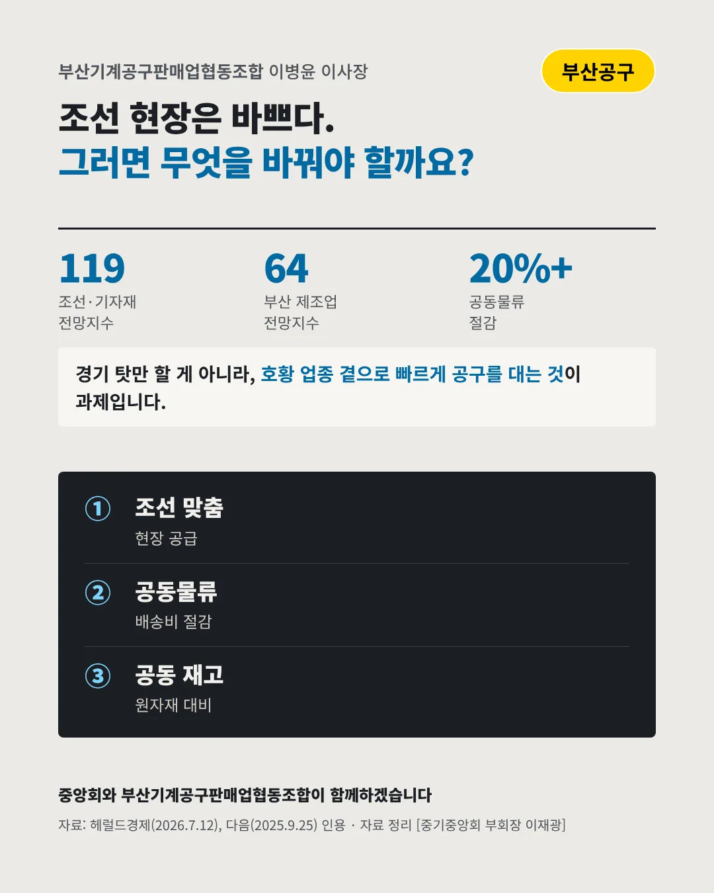

부산기계공구판매업협동조합
부산 제조업은 움츠렸지만, 조선 현장은 바쁘다
119 부산 조선·기자재 업종 경기전망지수






호황 업종 곁으로 공구가 먼저 가야 합니다. 기계공구 업계는 어디로 가야 할까요?
숫자로 보는 현실
- 64부산 제조업 전체 전망지수2개 분기 연속 하락(2026년 3분기)
- 20%+공동물류로 줄인 물류비조선기자재 공동물류센터 사례
- 2배+다른 지역보다 비싼 공장 부지부산 강서 공단은 80% 넘게 분양
무엇이 바뀌었나
- 갈림: 업종 차이가 커졌다조선·전자는 호황, 섬유·신발·화학은 침체로 손님이 갈렸다
- 불안: 원자재가 흔들린다중동 사태로 원자재 수급과 값이 불안하다
- 대응: 미리 사 둔다업체들이 원부자재 재고를 늘리고 선매입에 나섰다
그래도 길은 있다
- 조선 현장에 맞춘다조선·기자재 현장에 필요한 공구를 맞춤으로 빠르게 공급한다
- 함께 나른다공동물류센터로 배송비를 줄이고 납기를 당긴다
- 함께 쌓아 둔다공동 재고로 원자재 불안에 대비한다
한 장 요약

조합 소개
부산기계공구판매업협동조합은 부산 강서 유통단지 등에서 기계와 공구를 판매하는 기업들의 조합입니다.
자료: 헤럴드경제(2026.7.12), 다음(2025.9.25)